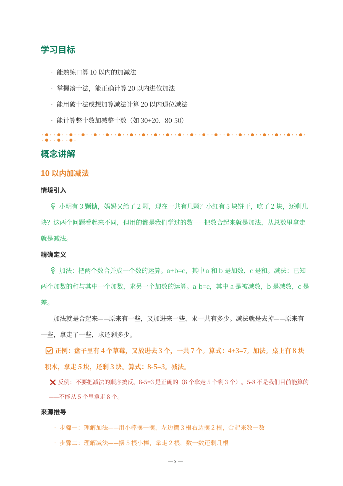
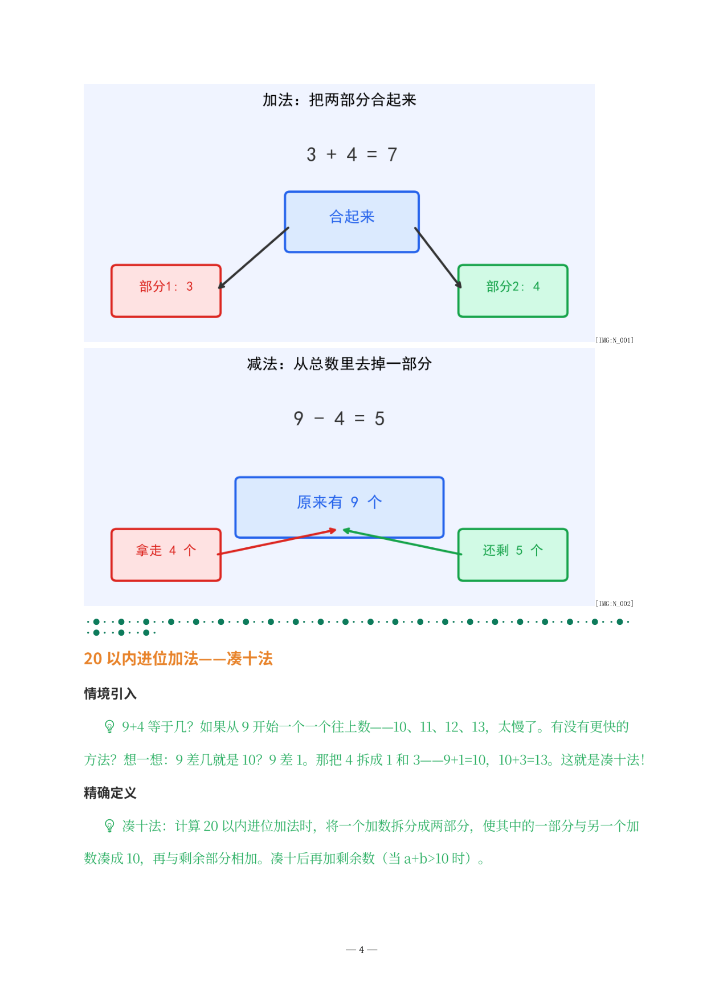
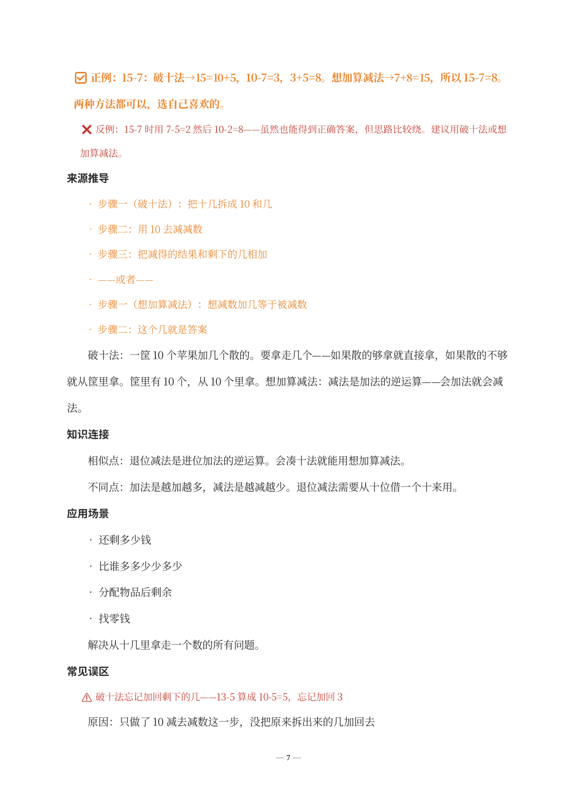
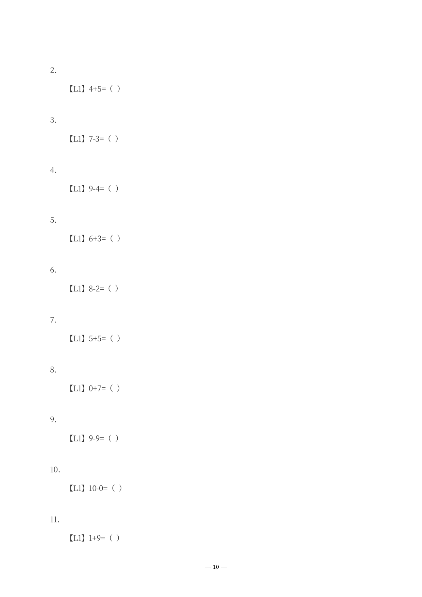
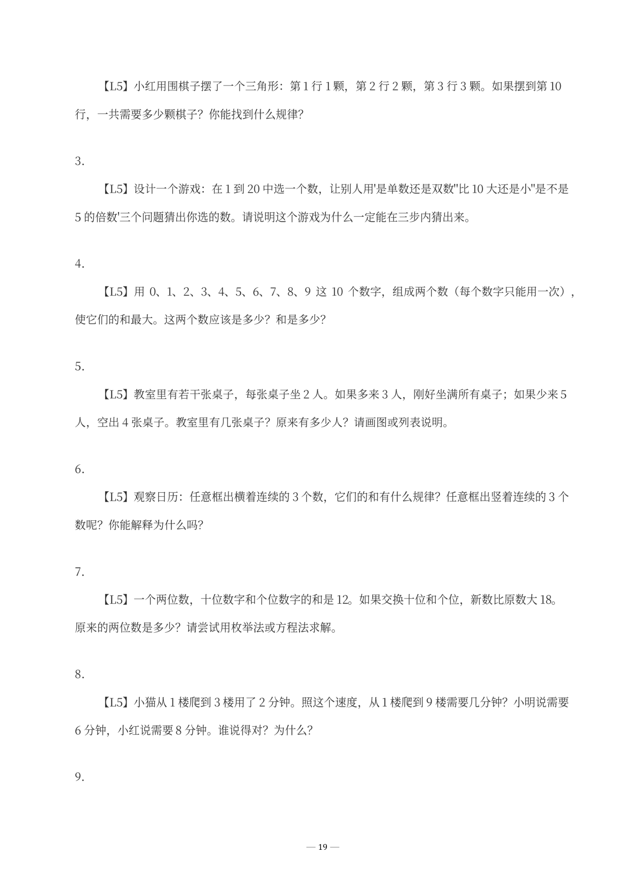

以下是《20以内加减法·学生版》DOCX 实际截图。凑十法和破十法是小学阶段第一次接触进位与退位，也是 P1 最关键的思维跨越。所见即所得——您收到的文件排版、公式、题目与此完全一致。

↑ 学习目标与概念引入

↑ 凑十法——20以内进位加法的核心策略，含正例反例对比

↑ 破十法 + 想加算减法——退位减法的两种路径，含来源推导

↑ L1 基础识记——从10以内口算到凑十法填空，逐级爬坡

↑ L5 探究拓展——数学规律发现、游戏设计与开放性问题